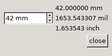

When the action is called, build a dad dialog called "uconv". Make sure there's only one instance of the dialog is created by checking if a dialog by this name already exists.
The dialog is built as a horizontal box to split it to left and right. On the left side there is only a coordinate input box. On the right side there's a vertical box hosting 3 labels where the results will be displayed.

The widget IDs of the input and the three result labels are saved in global variables inp, res1, res2 and res3.
Any change on the input will call action "uconv_update", which is also registered by the script. The update code reads the input field with the unit set to "mm", then sets the value of the first label (res1) to this text with a "mm" suffix appended. This is repeated two more times for two other unit types.
More details on DAD: DAD developer's doc